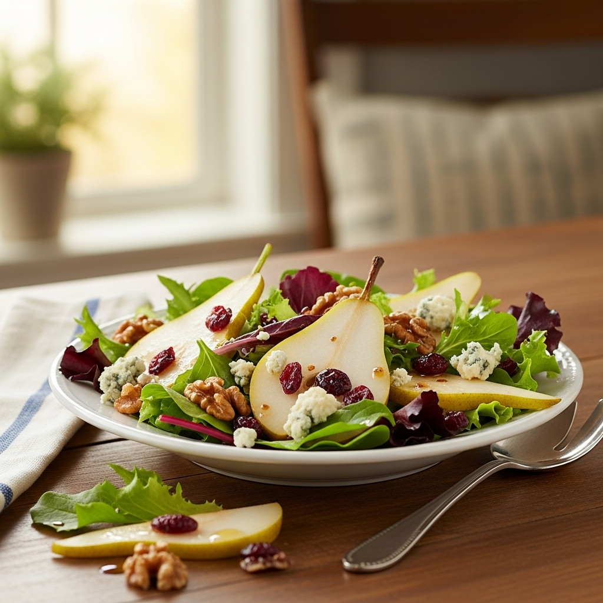

Pear Salad

Description
This is an incomplete recipe generated by Microsoft Copilot
for a generic pear salad. If you really want to make a pear salad
you will need more detail. Good luck!
Ingredients
- Pears
- Greens (arugula, spinach, or spring mix)
- Crumbled Cheese (goat cheese, blue cheese, or feta)
- Nuts (pecans, walnuts, or almonds)
- Dried Cranberries
- Balsamic Vinaigrette Dressing
Steps
- Wash salad greens
- Thinly slice pears
- Toast the nuts
- Add salad greens to a large bowl
- Arrange pears evenly over the greens
- Spinkle chees, nuts, and cranberries
- Add dressing to taste
- Serve